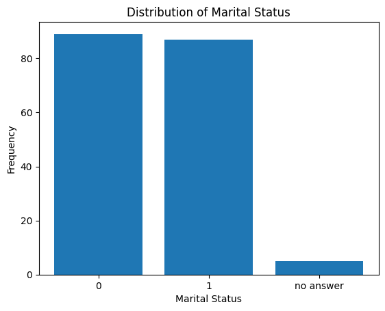

What is Machine Learning
Machine learning (ML) is a branch of artificial intelligence (AI) and computer science that focuses on using data and algorithms to enable AI to imitate the way that humans learn, and gradually improve.
How Does Machine Learning Work?
- Step 1: Data collection. Data can be collected from various sources such as databases, text files, images, audio files, or even scraped from the web.
- Step 2: Data preprocessing. It involves cleaning the data (removing duplicates, correcting errors), handling missing data (either by removing it or filling it in), and normalizing the data (scaling the data to a standard format).
- Step 3: Choosing the right model. There are many types of models to choose from, including linear regression, decision trees, and neural networks. The choice of model depends on the nature of your data and the problem you’re trying to solve.
- Step 4: Training the model. Training involves feeding the data into the model and allowing it to adjust its internal parameters to better predict the output.
- Step 5: Evaluating the model. This involves testing the model on new data it hasn’t seen during training.
- Step 6: Hyperparameter tuning and optimization. After evaluating the model, you may need to adjust its hyperparameters to improve its performance.
- Step 7: Predictions and deployment. his process involves feeding new data into the model and using the model’s output for decision-making or further analysis. Deploying the model involves integrating it into a production environment where it can process real-world data and provide real-time insights.
import numpy as np
import pandas as pd
import matplotlib.pyplot as plt
from dataidea.datasets import loadDatasetStep 1: Data Collection
Now I already collected some demographic data and provided it as an inbuilt dataset in the dataidea package.
Demographic data is information about groups of people according to certain attributes such as age, sex, and place of residence. Read More Here
Let’s load the dataset using dataidea’s loadDataset method. This is specifically used for inbuilt datasets
demo_df = loadDataset('demo')Now we can look at the top part of the data
demo_df.head()| Age | Gender | Marital Status | Address | Income | Income Category | Job Category | |
|---|---|---|---|---|---|---|---|
| 0 | 55 | f | 1 | 12 | 72.0 | 3.0 | 3 |
| 1 | 56 | m | 0 | 29 | 153.0 | 4.0 | 3 |
| 2 | 28 | f | no answer | 9 | 28.0 | 2.0 | 1 |
| 3 | 24 | m | 1 | 4 | 26.0 | 2.0 | 1 |
| 4 | 25 | m | no answer | 2 | 23.0 | 1.0 | 2 |
Step 2: Data Preprocessing
Let’s rename the column names so as to make the data easier to play with (this is optional to fit a model)
cols = {"Age":"age", "Gender":"gender", "Marital Status":"marital_status", "Address":"address",
"Income":"income","Income Category":"income_category", "Job Category":"job_category",}
demo_df.rename(columns=cols, inplace=True) # inplace modifies the original dataframedemo_df.columnsIndex(['age', 'gender', 'marital_status', 'address', 'income',
'income_category', 'job_category'],
dtype='object')Let’s explore the dataset and see if we can find some problems that we can fix (continuing with preprocessing)
We can be able to find specific missing values by using the isna() method.
This data set doesn’t have any explicit missing values and we can observe 0’s for each column.
demo_df.isna().sum()age 0
gender 0
marital_status 0
address 0
income 0
income_category 0
job_category 0
dtype: int64We can also use info() to find information about columns eg non-null values, data types etc
demo_df.info()<class 'pandas.core.frame.DataFrame'>
RangeIndex: 200 entries, 0 to 199
Data columns (total 7 columns):
# Column Non-Null Count Dtype
--- ------ -------------- -----
0 age 200 non-null int64
1 gender 200 non-null object
2 marital_status 200 non-null object
3 address 200 non-null int64
4 income 200 non-null float64
5 income_category 200 non-null float64
6 job_category 200 non-null int64
dtypes: float64(2), int64(3), object(2)
memory usage: 11.1+ KBdemo_df.describe() #will only give us numerical values| age | address | income | income_category | job_category | |
|---|---|---|---|---|---|
| count | 200.000000 | 200.000000 | 200.000000 | 200.000000 | 200.000000 |
| mean | 42.475000 | 11.485000 | 76.305000 | 2.520000 | 1.950000 |
| std | 12.801122 | 10.365665 | 107.554647 | 1.065493 | 0.781379 |
| min | 19.000000 | 0.000000 | 11.000000 | 1.000000 | 1.000000 |
| 25% | 32.000000 | 3.000000 | 27.000000 | 2.000000 | 1.000000 |
| 50% | 43.000000 | 9.000000 | 44.500000 | 2.000000 | 2.000000 |
| 75% | 51.000000 | 17.000000 | 76.000000 | 4.000000 | 3.000000 |
| max | 76.000000 | 51.000000 | 873.000000 | 4.000000 | 3.000000 |
Note that 75% of the people earn 76 units and below, and the average income is just over that ie 76.305, quickly we can think there’s some values extremely high in income that’s causing the mean to shift to the right (outliers).
A simple box plot can confirm this. All the points after the upper fence represent outliers under income.
plt.boxplot(demo_df.income)
plt.ylabel('Income')
plt.show()
For now, we’ll just remove these outliers, however this is not always the best option and once we have gained more experience, we can consider some more technical methods to handle the outlier problems
def getOutliers(column):
q1 = np.quantile(column, 0.25)
q3 = np.quantile(column, 0.75)
interquantile_range = q3-q1
lower_fence = q1 - 1.5*interquantile_range
upper_fence = q3 + 1.5*interquantile_range
outlier_indicies = np.where((column < lower_fence) | (column > upper_fence))[0]
outliers = np.array(column[outlier_indicies])
return outliers, outlier_indicies# obtain the indexes of outliers
outliers, indexes = getOutliers(demo_df.income)
# remove the rows by index
demo_df2 = demo_df.drop(indexes, axis=0)# summarize categorical columns
demo_df2.describe(include='object')| gender | marital_status | |
|---|---|---|
| count | 181 | 181 |
| unique | 4 | 3 |
| top | m | 0 |
| freq | 90 | 89 |
# find unique values
demo_df2.gender.unique()array(['f', ' f', 'm', ' m'], dtype=object)We observe here that gender has 4 unique observations but after printing them out, we notice there only really 2 unique values, just recorded not properly (spaces around some observations).
So now we need to strip the gender values of the spaces of the spaces aroung them.
# replace gender values
demo_df3 = demo_df2.replace(to_replace={' f': 'f', ' m': 'm'})
# look at the updated data
demo_df3.gender.unique()array(['f', 'm'], dtype=object)We now have only 2 unique observations that is f and m.
That’s done, now we can explore Marital Status for any potential issues to fix
marital_status_counts = demo_df3.marital_status.value_counts()
marital_status_countsmarital_status
0 89
1 87
no answer 5
Name: count, dtype: int64plt.bar(x=marital_status_counts.index, height=marital_status_counts.values)
plt.title('Distribution of Marital Status')
plt.xlabel('Marital Status')
plt.ylabel('Frequency')
plt.show()
We observe that we have people that never provided their marital status. For now, we can remove them and later when we have gotten more experience, we can find more technical and safer ways to handle these.
demo_df4 = demo_df3[demo_df3.marital_status != 'no answer'].copy()That will return to us only the rows where the Marital Status is either 1 or 0
It turns out that most machine learning models work well with numbers. So we want to covert the nominal variables from string to either int or float
demo_df4['marital_status'] = demo_df4.marital_status.astype('int')Let’s also create dummy variables for the gender categories. Dummy variables are binary (0 or 1) variables created from categorical variables to be used in regression models. In Python, they can be created using the pd.get_dummies() function from the pandas library.
demo_df5 = pd.get_dummies(
data=demo_df4,
columns=['gender'],
drop_first=True,
dtype='int'
)demo_df5.sample(n=5)| age | marital_status | address | income | income_category | job_category | gender_m | |
|---|---|---|---|---|---|---|---|
| 159 | 27 | 0 | 0 | 25.0 | 2.0 | 1 | 0 |
| 110 | 44 | 1 | 8 | 46.0 | 2.0 | 3 | 1 |
| 60 | 23 | 1 | 1 | 15.0 | 1.0 | 1 | 1 |
| 186 | 44 | 0 | 13 | 104.0 | 4.0 | 2 | 0 |
| 168 | 48 | 1 | 16 | 29.0 | 2.0 | 3 | 1 |
That’s our last preprocessing act for now.
Choosing the right model
When choosing a machine learning model, consider the following factors:
- Nature of the problem: Determine whether it’s a classification, regression, clustering, or another type of problem.
- Data characteristics: Assess the size, dimensionality, and quality of the dataset, including handling of missing values and categorical features.
- Interpretability: Consider if model interpretability is crucial for the application or stakeholders.
- Computational efficiency: Take into account the computational resources required for training and inference.
- Scalability: Ensure the model can handle large datasets and be scaled up if needed.
- Domain knowledge: Leverage any domain-specific insights to guide model selection and feature engineering.
We would like to predict marital_status, this makes our problem a classification problem. One of the popular classification models is the LogisticRegression model.
This is provided for us by Sci Kit Learn through an easy and intuitive API
from sklearn.linear_model import LogisticRegressionlogistic_regression_model = LogisticRegression()Training the Model
Before fitting or training a Machine Learning model, we need to identify what our independent features or variables are. Many Data Analysis like to call them X.
We also need to identify the outcome feature, commonly refered to as y.
X = demo_df5.drop('marital_status', axis=1)
y = demo_df5.marital_statusSo, to train our Machine Learning model using sklearn, we can just call the fit() method on the model object and pass to it the data ie X and y respectively
logistic_regression_model.fit(X, y)LogisticRegression()In a Jupyter environment, please rerun this cell to show the HTML representation or trust the notebook.
On GitHub, the HTML representation is unable to render, please try loading this page with nbviewer.org.
LogisticRegression()
Evaluating the Model
We can see the model’s accuracy on the entire data set by calling the score() method on the model object and passing to it the X and y.
logistic_regression_model.score(X, y) * 10055.68181818181818We can observe that the model has scored 55.68% accuracy.
Note!
Accuracy is only one of many metrics that we can use to evaluate the performance of our model. We shall discover more metrics to use to understand the model performance
HyperParameter Tuning and Optimization
It turns out that LogisticRegression model class has some parameters that we can tune (or modify) to improve the performance of our model.
logistic_regression_model2 = LogisticRegression(
penalty='l1',
solver='liblinear',
max_iter=100
)
logistic_regression_model2.fit(X, y)
logistic_regression_model2.score(X, y) * 10056.25It appears that modifying penalty and solver improved slightly improved our model.
Predictions and Deployment
To make a prediction, first make sure that your model is trained. Then we can call the predict() method on the model object and pass to it the data that we want to make predictions on.
# pick out from demo_df3 where marital status is no answer
demo_df6 = demo_df3[demo_df3.marital_status == 'no answer'].copy()
# removing marital status
demo_df6.drop('marital_status', axis=1, inplace=True)
# obtaining dummy variables for gender
demo_df6 = pd.get_dummies(
data=demo_df6,
columns=['gender'],
drop_first=True,
dtype='int'
)demo_df6| age | address | income | income_category | job_category | gender_m | |
|---|---|---|---|---|---|---|
| 2 | 28 | 9 | 28.0 | 2.0 | 1 | 0 |
| 4 | 25 | 2 | 23.0 | 1.0 | 2 | 1 |
| 7 | 46 | 20 | 75.0 | 4.0 | 3 | 1 |
| 8 | 41 | 10 | 26.0 | 2.0 | 2 | 1 |
| 9 | 29 | 4 | 19.0 | 1.0 | 2 | 0 |
predictions = logistic_regression_model.predict(demo_df6)
print(predictions)[0 1 0 1 0]We can see the prediction returned as a numpy array. The predictions can also be added to the data eg demo_df6.
demo_df6['predicted_marital_status'] = predictions
demo_df6| age | address | income | income_category | job_category | gender_m | predicted_marital_status | |
|---|---|---|---|---|---|---|---|
| 2 | 28 | 9 | 28.0 | 2.0 | 1 | 0 | 0 |
| 4 | 25 | 2 | 23.0 | 1.0 | 2 | 1 | 1 |
| 7 | 46 | 20 | 75.0 | 4.0 | 3 | 1 | 0 |
| 8 | 41 | 10 | 26.0 | 2.0 | 2 | 1 | 1 |
| 9 | 29 | 4 | 19.0 | 1.0 | 2 | 0 | 0 |